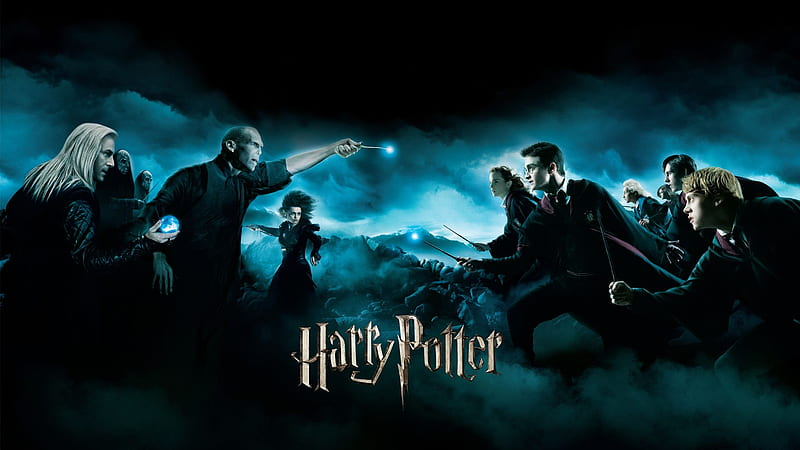
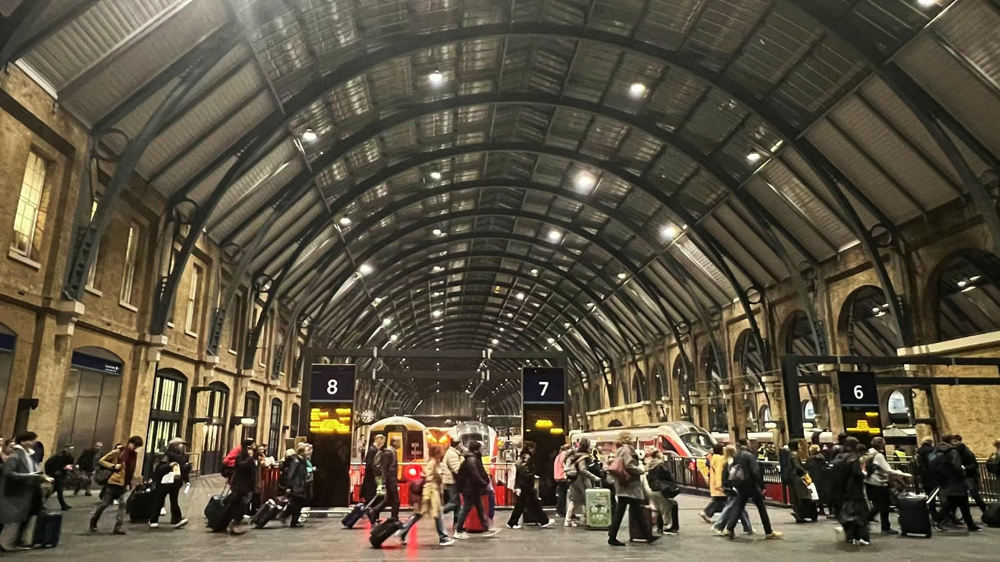
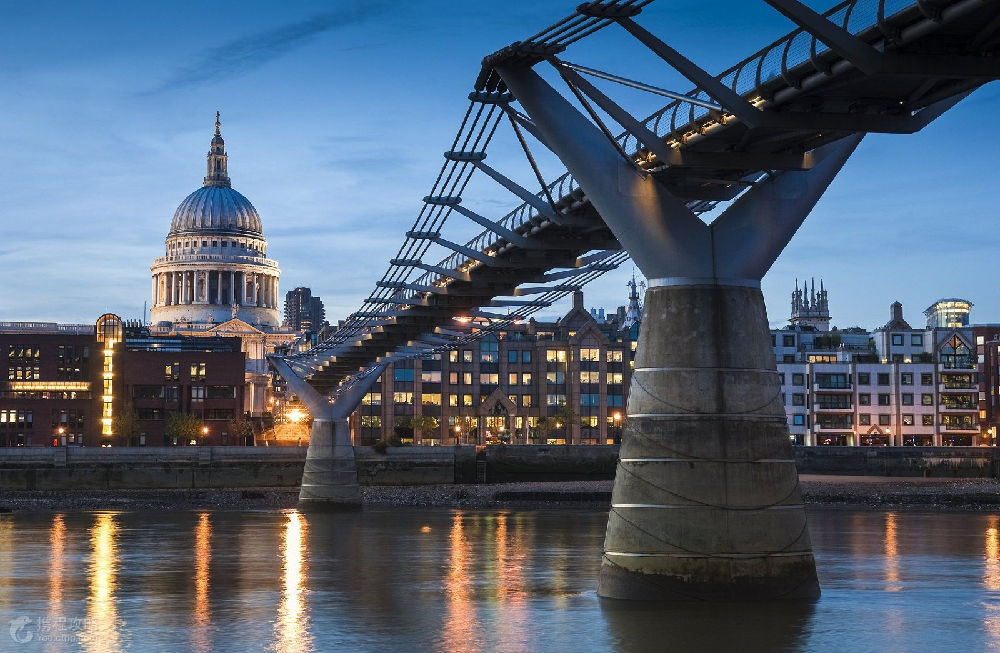
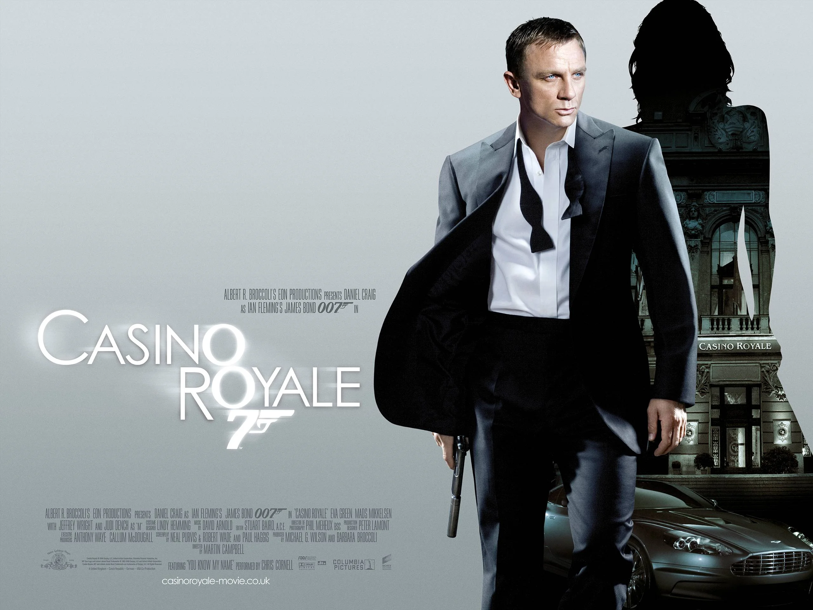

英國作為影視強國，其經典作品和經典拍攝地點深受全球觀眾喜愛，充滿了豐富的文化底蘊與歷史背景。


首先，提到英國影視，就不能不提《哈利波特》系列。這部風靡全球的魔法奇幻電影，在英國多處實景拍攝， 如華納兄弟工作室內的哈利波特片場讓影迷夢想成真。倫敦附近的國王十字車站9¾月台、格洛斯特大教堂、愛丁堡周邊古城堡等地， 都成為影迷必訪的朝聖之地。這些景點融入英國的中世紀建築風格與神秘氛圍，感受經典故事的魔力。


另一個不可忽略的英國影視符號是007詹姆斯邦德系列，許多經典場景設在倫敦的泰晤士河畔、國會大廈、米其林街道以及蘇格蘭高地的壯麗自然風光。 這些地點展現了英國都市的現代繁華與鄉村的壯麗景象，讓人感受特務故事中的英倫風情與刺激動作。
除此之外，英國的歷史劇集如《唐頓莊園》和《神秘博士》也讓觀眾透過鏡頭深入了解英國的貴族生活與科幻奇幻世界， 拍攝地點從壯麗的鄉村豪宅到充滿歷史感的教堂與古堡，這些文化遺產不僅是影視拍攝場景，更是英國歷史的縮影。
英國的影視作品深刻映照其多元文化，融合古典與現代，傳統與創新。走訪這些名勝， 除了欣賞美麗的風景，更能感受影視故事中所展現的英國精神與文化魅力，讓人流連忘返。